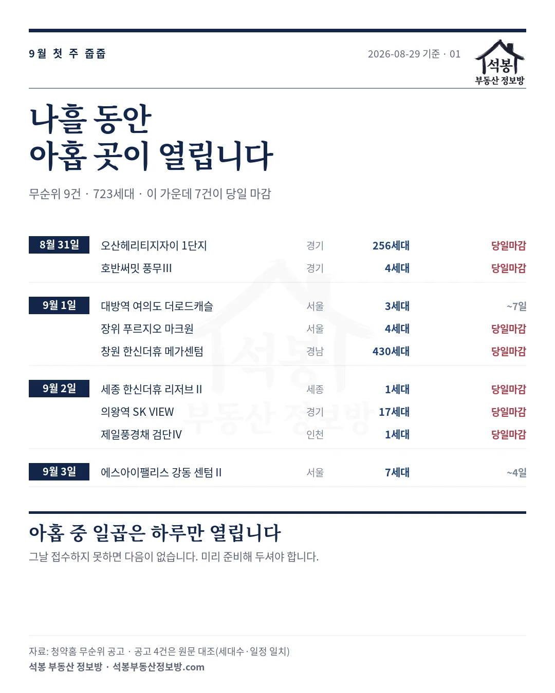
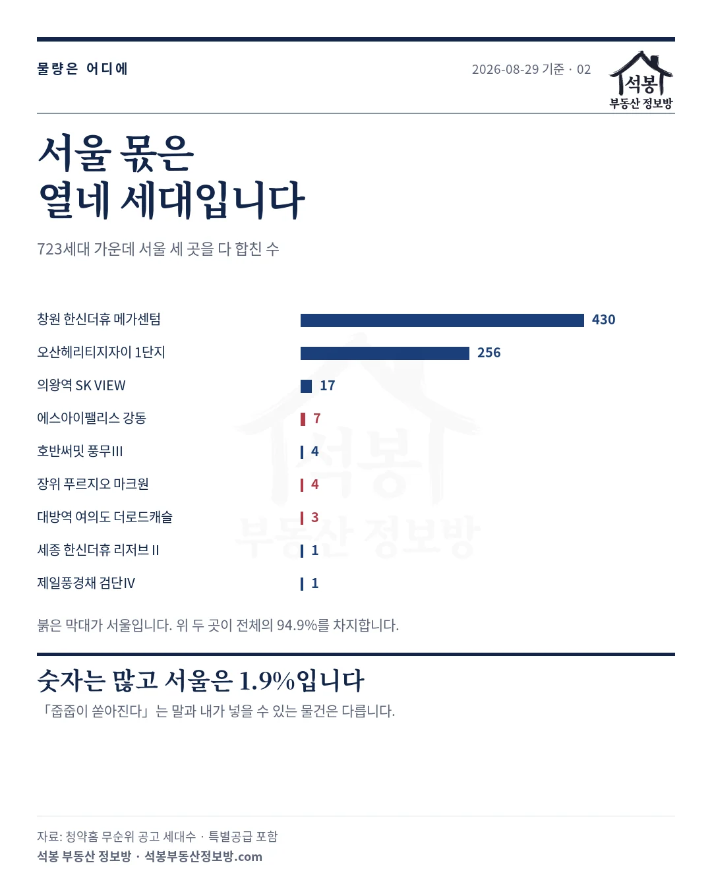
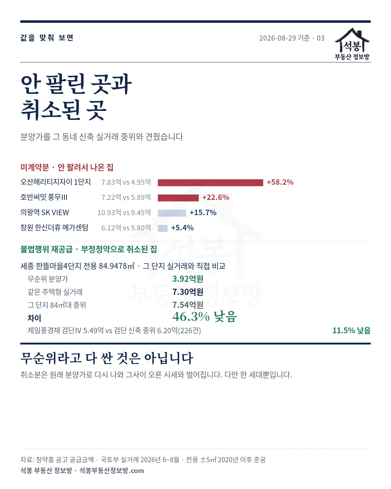
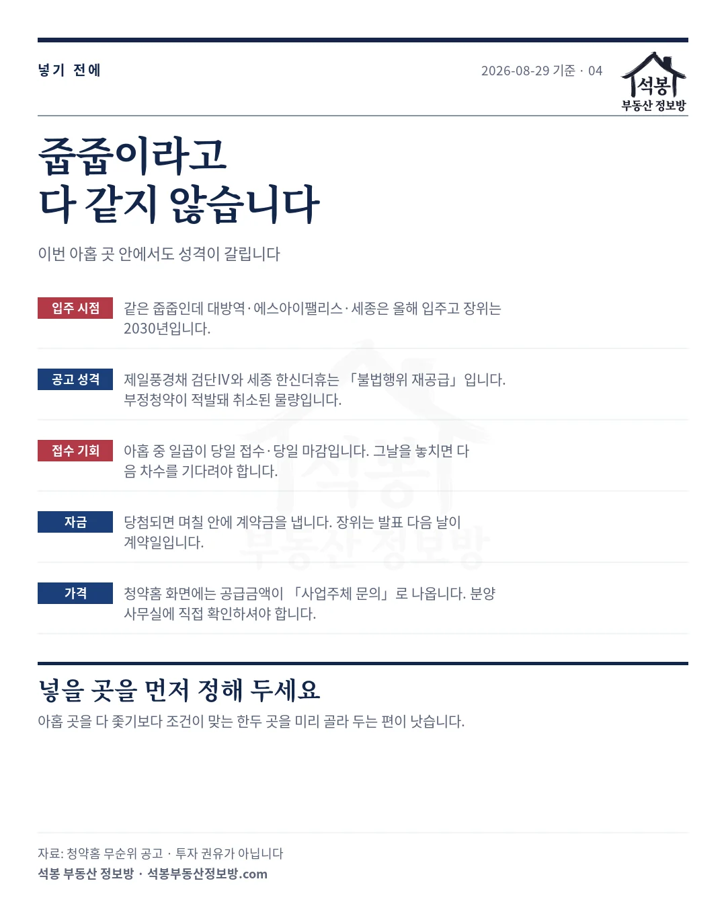

2026년 8월 31일부터 9월 3일까지 나흘 동안, 무순위 아홉 곳이 차례로 접수를 시작합니다. 합쳐서 723세대입니다(마지막 접수 마감은 9월 7일).
2026년 8월 28일 글에서 9월 일반청약 여섯 곳을 정리하면서 시티오씨엘 9단지 분양가가 주변 신축보다 14% 위라고 말씀드렸습니다. 같은 자로 이번 무순위 아홉 곳을 재 보니 훨씬 크게, 그리고 양쪽으로 벌어졌습니다.
아홉 곳을 그 동네 실거래와 맞대 보니 두 갈래로 갈렸습니다. 안 팔려서 나온 집은 시세보다 비싸고, 부정청약으로 취소돼 나온 집은 쌉니다. 가장 벌어진 곳은 같은 단지 같은 평형이 7억 3,000만원에 거래됐는데 3억 9,200만원에 나옵니다.
하나. 나흘 동안 아홉 곳입니다
먼저 일정부터 펼쳐 보겠습니다. 날짜별로 이렇게 열립니다.
| 접수일 | 단지 | 지역 | 세대 | 마감 |
|---|---|---|---|---|
| 8월 31일 | 오산헤리티지자이 1단지 | 경기 | 256 | 당일 마감 |
| 8월 31일 | 호반써밋 풍무Ⅲ | 경기 김포 | 4 | 당일 마감 |
| 9월 1일 | 대방역 여의도 더로드캐슬(5차) | 서울 영등포 | 3 | 9월 7일까지 |
| 9월 1일 | 장위 푸르지오 마크원(2차) | 서울 성북 | 4 | 당일 마감 |
| 9월 1일 | 창원 한신더휴 메가센텀 | 경남 | 430 | 당일 마감 |
| 9월 2일 | 세종 한신더휴 리저브Ⅱ | 세종 | 1 | 당일 마감 |
| 9월 2일 | 의왕역 SK VIEW | 경기 의왕 | 17 | 당일 마감 |
| 9월 2일 | 제일풍경채 검단Ⅳ | 인천 | 1 | 당일 마감 |
| 9월 3일 | 에스아이팰리스 강동 센텀Ⅱ(4차) | 서울 강동 | 7 | 9월 4일까지 |
붉게 표시한 일곱 곳이 당일 접수, 당일 마감입니다. 그날 하루 안에 넣지 못하면 그걸로 끝입니다.

가입하시면 지역 시장조사 보고서(약식)를 2회 무료로 요청하실 수 있습니다.
둘. 723세대라는 숫자에 속으면 안 됩니다
"나흘 동안 700세대 넘게 나온다"고 하면 꽤 많아 보입니다. 그런데 어디에 있는지를 보면 이야기가 달라집니다.
창원 430세대와 오산 256세대, 이 두 곳이 686세대입니다. 전체의 94.9%입니다. 나머지 일곱 곳을 다 합쳐야 37세대입니다.
서울은 세 곳인데 3세대, 4세대, 7세대. 합쳐서 14세대입니다. 전체의 1.9%입니다.
| 구분 | 곳 | 세대 |
|---|---|---|
| 창원 · 오산 (두 곳) | 2곳 | 686세대 (94.9%) |
| 서울 (영등포 · 성북 · 강동) | 3곳 | 14세대 (1.9%) |
| 그 밖 (김포 · 의왕 · 세종 · 인천) | 4곳 | 23세대 |
줍줍 소식이 들릴 때 체감과 실제가 어긋나는 지점이 여기입니다. 건수는 아홉이지만 내 조건에 맞는 물건은 그중 한둘일 수 있습니다.

셋. 256세대가 남은 이유는 값에 있습니다
이번 아홉 곳 가운데 물량이 가장 큰 곳은 오산헤리티지자이 1단지, 256세대입니다. 왜 이만큼이 남았는지 값을 맞춰 봤습니다.
비교는 이렇게 했습니다. 세대수가 가장 많은 주택형을 골라, 그 시군구에서 전용 ±5㎡ 구간·2020년 이후 준공 아파트의 최근 실거래 중위와 견줬습니다. 새 아파트끼리 견줘야 하니까요. 기간은 2026년 6월부터 8월까지입니다.
| 단지 | 분양가 | 그 동네 신축 중위 | 차이 |
|---|---|---|---|
| 오산헤리티지자이 1단지 전용 84.98㎡(25.7평) · 220세대 | 7억 8,300만원 | 4억 9,500만원 71건 | +58.2% |
| 호반써밋 풍무Ⅲ 전용 84.98㎡(25.7평) | 7억 2,200만원 | 5억 8,900만원 103건 | +22.6% |
| 의왕역 SK VIEW 전용 84.69㎡(25.6평) | 10억 9,300만원 | 9억 4,500만원 16건 | +15.7% |
| 창원 한신더휴 메가센텀 전용 84.97㎡(25.7평) · 142세대 | 6억 1,200만원 | 5억 8,000만원 23건 | +5.4% |
오산은 그 동네 신축보다 58% 비쌉니다. 게다가 입주는 2029년 9월입니다. 3년을 기다리면서 이미 지어진 새 아파트보다 1.6배를 내는 셈이니, 256세대가 남을 만합니다.
창원은 5% 차이로 거의 붙어 있는데도 430세대가 남았습니다. 값만으로 설명되지 않는 경우도 있다는 뜻입니다.
서울 세 곳은 이 표에 없습니다. 전용 24~42㎡ 소형이라 견줄 아파트 실거래가 한두 건뿐이었습니다. 표본이 열 건도 안 되는 비교는 하지 않았습니다.
넷. 부정청약으로 취소된 집은 반대입니다
아홉 곳 중 둘은 성격이 다릅니다. 제일풍경채 검단Ⅳ와 세종 한신더휴 리저브Ⅱ는 일반 무순위가 아니라 "불법행위 재공급"으로 올라와 있습니다. 부정청약이 적발돼 계약이 취소된 물량입니다.
이 둘은 값이 반대로 움직입니다. 취소된 계약의 원래 분양가 그대로 다시 나오기 때문입니다. 그사이 시세가 올랐으면 그만큼 싸집니다.
세종이 그렇습니다. 이 단지는 2022년에 준공돼 이미 실거래가 쌓여 있습니다. 그래서 인근 시세가 아니라 같은 단지, 같은 주택형과 직접 견줄 수 있습니다.
| 세종 한뜰마을4단지(한신더휴리저브2) 전용 84.9478㎡(25.7평) | 금액 |
|---|---|
| 무순위 분양가 | 3억 9,200만원 |
| 같은 주택형 실거래 (2026년 6월) | 7억 3,000만원 |
| 그 단지 84㎡대 4건 중위 | 7억 5,400만원 |
| 차이 | 46.3% 낮음 |
검단은 5억 4,900만원인데 검단 84㎡대 신축 중위가 6억 2,000만원(226건)이라 11.5% 낮습니다. 이쪽은 2027년 2월 입주 예정이라 그 단지 실거래는 아직 없습니다.
다만 두 곳 다 딱 한 세대씩이고, 넣는 창구도 다릅니다. 세종은 특별공급으로만 받고 검단은 일반공급으로만 받습니다. 세종은 특별공급 자격이 있어야 넣을 수 있다는 뜻입니다.
값이 벌어져 있다는 건 그만큼 사람이 몰린다는 뜻이기도 합니다. 공고마다 거주지 요건이 붙는 경우가 있으니, 넣을 수 있는지부터 확인하셔야 합니다.

다섯. 입주가 2026년인 곳과 2030년인 곳
값 말고 하나 더 갈리는 게 있습니다. 언제 들어가 사느냐입니다.
대방역 여의도 더로드캐슬과 에스아이팰리스 강동, 세종 한신더휴는 2026년 9월 입주입니다. 이미 다 지어진 집이라 당첨되면 바로 들어갈 수 있습니다.
반면 장위 푸르지오 마크원은 2030년 9월, 오산헤리티지자이는 2029년 9월입니다. 3년에서 4년을 기다려야 합니다.
같은 "줍줍"으로 묶여 있어도 전세를 빼야 하는 시점부터 자금 계획까지 완전히 다른 물건입니다. 목록을 볼 때 입주월을 먼저 보시면 후보가 절반으로 줄어듭니다.
분양가는 어디서 봤나
공고 아홉 건을 다 열어 보니 표기가 갈렸습니다. 미계약분 일곱 곳은 공급금액 자리가 "사업주체 문의"입니다. 셋째 절의 금액은 청약홈이 제공하는 공고 자료의 값이라 분양사무실 확인이 필요합니다.
반면 불법행위 재공급 두 곳은 청약홈 화면에 금액이 그대로 적혀 있습니다. 세종 3억 9,200만원, 검단 5억 4,900만원입니다. 넷째 절 비교는 이 값으로 했습니다.

넣기 전에 정해 두실 것
아홉 곳을 다 좇는 건 현실적이지 않습니다. 조건이 맞는 한두 곳을 미리 골라 두시는 편이 낫습니다.
미리 정해 두면 좋은 것
· 지금 들어가 살 집인가, 4년 뒤를 보는가 (입주 시점부터 갈립니다)
· 당첨되면 며칠 안에 계약금을 낼 수 있는가 (장위는 9월 4일 발표, 9월 5일 계약입니다)
· 그 동네 시세를 알고 있는가 (분양가는 분양사무실에 확인)
· 접수일에 시간을 낼 수 있는가 (일곱 곳이 하루만 받습니다)
무순위 자격 요건은 2025년에 바뀐 뒤로 그대로입니다. 성년이면 되고 청약통장도 필요 없지만, 공고마다 거주지 요건이 붙는 경우가 있습니다. 넣으실 곳의 입주자모집공고문을 반드시 직접 확인하셔야 합니다.
발표는 9월 3일부터 9일 사이에 몰려 있습니다. 아홉 곳의 당첨자가 차례로 나옵니다.
같은 기간에 열리는 일반청약은 따로 정리해 두었습니다. 공고가 확정된 여섯 곳과 대기 중인 단지들은 9월 청약 공고 정리 글에서 보실 수 있습니다.
원자료: 청약홈 무순위·잔여세대 공고 9건(2026년 8월 29일 기준, 접수 시작일이 8월 31일 이후인 건). 세대수는 일반공급과 특별공급을 합한 수이고, 일정은 모집공고일·청약접수·당첨자발표·계약일 원문 기준입니다
아홉 건 모두 청약홈 원문을 직접 열어 세대수·주택형·일정·입주예정월을 대조했고 전부 일치했습니다
⚠️공급금액 표기가 갈립니다. 미계약분 일곱 곳은 「사업주체 문의」라 셋째 절 금액은 청약홈 공고 자료 값이고, 불법행위 재공급 두 곳(세종·검단)은 화면에 금액이 명시돼 넷째 절은 그 값을 썼습니다. 계약 전 분양사무실 확인을 권합니다. 자격·거주지 요건은 공고마다 다르므로 입주자모집공고문을 직접 보셔야 합니다
편집·제작: 석봉 부동산 정보방 · 투자 권유가 아닙니다.